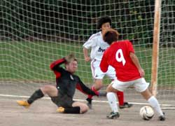
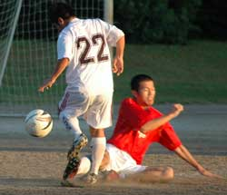

|
Oi Futo, Saturday 1st November
As most TML players will know, there are occasions when it is necessary to play together with complete strangers in order to get 11 men out on the field. And, as is natural, it is almost impossible to strike up an immediate understanding with someone you have just met. It was this problem, more than anything that led to Y-Abe FC's 5-1 tonking at the hands of El Diego.
In only their 3rd outing as a TML team, Y-Abe FC looked disjointed from the kick-off, with Babu the Tasmanian talisman providing their only thrust through the midfield. El Diego, displaying intelligent movement and a clear team understanding, were happy to pass the ball around, patiently probing for an opening. Most of their chances came via through balls slipped through the middle of the Y-Abe FC back four, which had the central defenders and goalkeeper scrambling on numerous occasions.
However, thanks to a combination of profligate finishing and determined goalkeeping by Michael "Jackie" Chan, who pulled off a fantastic triple save just before the break, both teams finished the half goalless.
After the break, El Diego changed tactics and began to play more down the wings, and this paid off with a goal just 2 minutes into the second half. The cross was met well by the unmarked forward, but Jackie really should have kept it out. Y-Abe FC heads went down and just three minutes later, El Diego punished a defensive error to extend the lead to 2-0. A comeback looked on after an Eric Follet goal made it 2-1, but instead what followed was a measured display by El Diego, as they took advantage of poor marking, tiring legs and the failing light to add another 3 goals before the end of the game. Final score El Diego 5, Y-Abe FC 1.
Match report by Jackie Chan
|